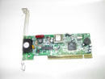
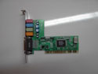
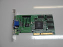

PCI Network Card, also know as a network interface card (NIC) is the hardware component that connects the computer to a network.
PCI Sound Card allows the computer to input, process and deliver sound.
PCI Video Card creates and displays the image on screen.